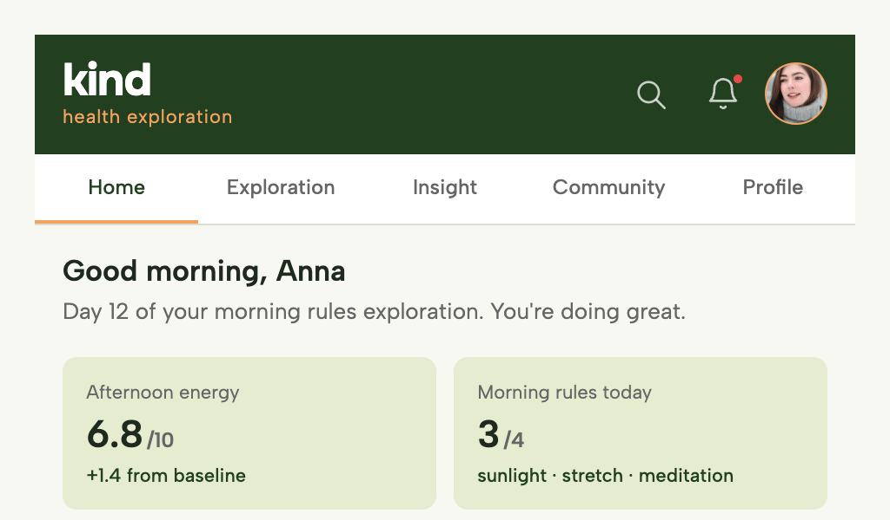
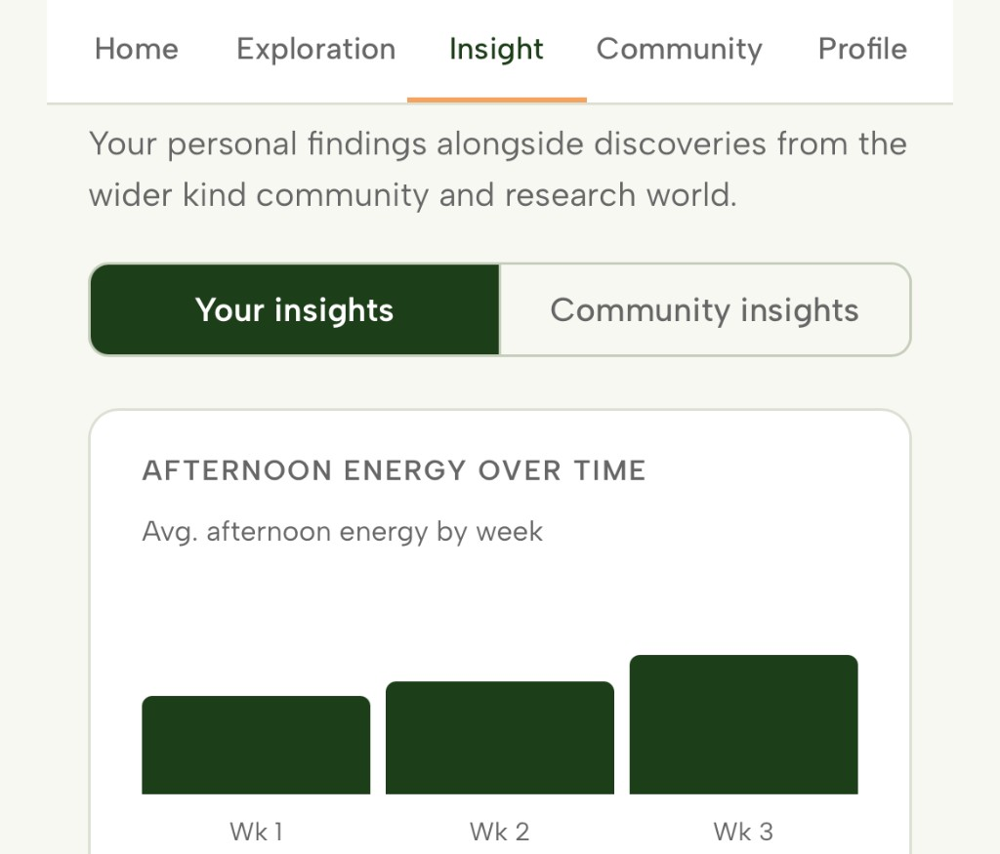
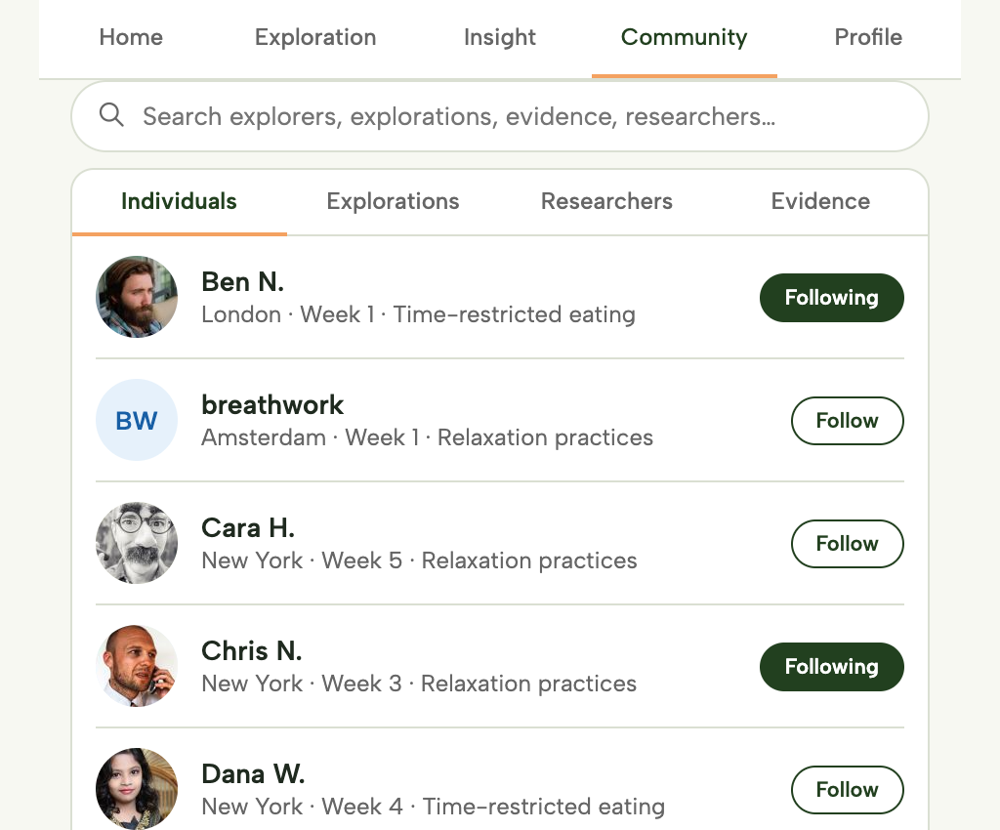
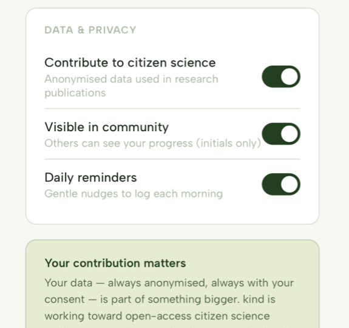

Kind helps you cut through the noise, find changes that might actually work for you, and gives you the support to follow through — all grounded in real science.
You don't need to be a biohacker or a fitness obsessive, but we imagine you are all keen to explore. Kind meets you where you are.
You're already experimenting with your health and want structured, evidence-backed explorations to take it further — and a kind community that you can share your journey with.
You've got health goals — better sleep, more energy, less stress — and you want trusted guidance and a gentle nudge to actually make progress.
You've had a new diagnosis, received advice from a doctor, or simply want to understand your body better. Kind helps you take those first steps with confidence.
Kind walks alongside you through a structured exploration — from understanding your goals to seeing your personal results.
Share your health goals, lifestyle, and what you've already tried. Kind builds a personal profile to match you with relevant explorations.
Browse curated explorations — like a caffeine window for sleep, or creatine for energy — and choose one that fits your life and goals.
Your AI companion sends gentle reminders and helps you log what you're doing and how you're feeling — no complicated data entry required.
At the end of your exploration, see how it worked for you personally — and how your results compare to others in the group.
Connect with people on similar journeys, share your experience, and benefit from the collective wisdom of the Kind community.
With your consent, your anonymised exploration data contributes to real research — helping build evidence that benefits everyone.
Most health advice is based on what works for the average person. But you're not average. Kind's AI matches you with explorations based on your profile, goals, and what's already worked (or hasn't) for people like you.

Any change is hard — especially alone. Your Kind companion checks in with you, celebrates progress, helps you troubleshoot, and reminds you why you started. It's the accountability partner that never gets tired.

Join groups of like-minded individuals exploring similar health topics. Share your experiences, follow others on their journeys, and build on collective insight — all in a kind and supportive space.

Kind stores it securely in your personal data vault, where you can see it and see how it is used by researchers. We're built on HIPAA-compliant principles and robust data security.

Kind launches with a curated set of evidence-backed explorations. New areas are added as researchers contribute explorations and the community grows.
Do morning rules reduce my chances of an afternoon crash?
8-week exploration to see if early sunlight exposure, morning stretching, caffeine offsetting, or morning meditation help your afternoon energy.
Does time restricted eating improve my energy levels?
6-week exploration to see if a restriction in the time window in which you consume food helps to support higher energy levels through the day. No calorie restriction — just timing.
Does moderation of screen exposure improve my sleep quality?
6-week exploration to see if a reduction in screen exposure both before and at bedtime can increase sleep quality.
Does reduction of Ultra Processed Food (UPF) improve my mood?
6-week exploration to see if a reduction in the daily intake of Ultra Processed Foods and their replacement with unprocessed foods can improve mood.
Do relaxation practices improve my composure?
6-week exploration to see if vagal breathing, progressive muscle relaxation, short (nature) walks, or meditation / visualisation help reduce stress and anxiety.
As research partners contribute new content and suggestions, Kind's library of explorations will grow — covering more areas of health and wellbeing.
Kind is a health exploration platform — not a tracking app, a fitness app, or a supplement store. The key difference is that Kind helps you run structured, time-limited explorations of health interventions (like a caffeine window for sleep, or creatine for energy) and gives you personal results at the end. Unlike most health apps that just log data, Kind connects your exploration to real research and a community of people on similar journeys. It's also built in partnership with health researchers, so the explorations you follow are evidence-backed — not just trending on social media.
Your health data is stored securely in your personal data vault and belongs to you. Kind never sells your data to third parties. If you choose to contribute anonymised data to research, you do so with full, explicit consent — and you can withdraw that consent at any time. When data is shared with researchers, it is always anonymised and aggregated so you are never identifiable. Kind is built to HIPAA-compliant standards and follows cybersecurity best practices throughout. We're also transparent about exactly how your data is used and who can access it.
Kind is not a medical service and does not provide medical advice. Before starting any health exploration — especially if you have a diagnosed condition or take prescribed medication — you should consult your doctor or a qualified healthcare professional. Some explorations on Kind may not be suitable for people with certain conditions, and eligibility criteria will be clearly stated for each exploration. Kind is designed to complement, not replace, professional medical care.
Kind is currently in alpha, with a small group of users testing early versions of the product. A public beta is planned for late 2026. By joining the waitlist now, you'll be among the first to be invited when spots open up — and your feedback during the early period will help shape the product. We'll keep waitlist members updated with progress and occasional behind-the-scenes updates as we build toward the beta launch.
We're in alpha and building toward a public beta. Join the waitlist and we'll let you know the moment a spot opens up.